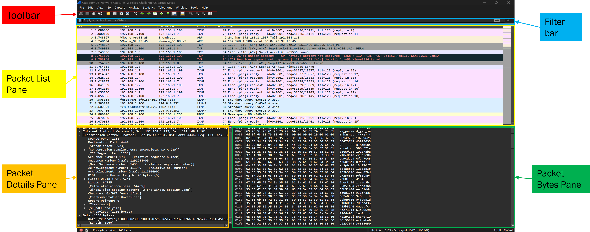

Analyzing Network Traffic to Find Passwords
Step 1: Taking a look at the interface
When you look at Wireshark for the first time it is quite intimidating so let's break it down. Starting at the top you have the main toolbar which (from left to right) consists of the different capture buttons, file capture options, packet selection options, color rules and zoom options. Beneath that you have the filter toolbar. Finally, the main areas of the interface (starting from top to bottom) are the Packet List Pane, Packet Details Pane and the Packet Bytes Pane. There is more info on the the Wireshark interface in my (Wireshark intro placeholder) write up.
Step 2: Capturing Packets
Typically you would start by selecting the network interface you want to capture traffic from. Click on the "Start" button to begin capturing packets. However, in this example, we will look at a Capture the Flag (CTF) that I had to do for school at UMGC. For that reason I will not show what the final flag is but how to get to it. This is not intended to plagiarize, it is for educational purposes only.
Step 3: Begin Packet Analysis
Credentials Tool
Now that we have our file loaded it is time to start our analysis. Since we know the objective is to find a password let's use one of Wireshark's tools to begin tracking it down. The "Credentials" tool will help us find any packets that contain references to passwords.
Once we select the tool a Window will open providing us the relevant packets.
From this window we can click on the packet number to bring up the packet itself.
Filtering
At the top of the page in the filter bar we can begin to filter packets via ports such as FTP, SSH and TELNET. Let's start with FTP to filter down to only the packets that used FTP.
Packets can contain a ton of information so it's important to understand how to sift through it all to find the information that is relevant to you. For now we will use "Follow TCP Stream" to see all the other traffic this packet is associated with.
This too will open a window. In this window, you will see the traffic associated with this packet. You will notice a number before each line of the server text (blue highlighted text means server text, red means client text). These are called HTTP status codes. The 100-199 range means informational response, 200-299 range signifies success and 300-399 means redirection messages. For example, you will notice next to the server client text with 226 the message reads "Transfer complete". This stream revealed to us the text file "mypasswordfile.txt". We can now do one final filter to capture the flag.
Capturing the Flag
The last technique to help us find the flag is by using the "frame contains" command. By entering "frame contains 'password'" we will be given back a few packets. You will notice the last packet listed isn't a normal FTP packet.
Congratulations!
You have captured the flag!